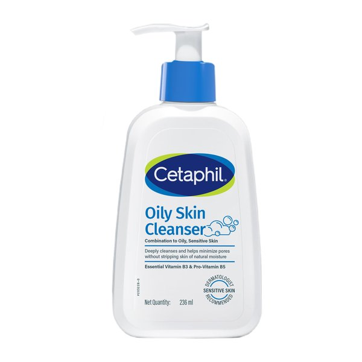
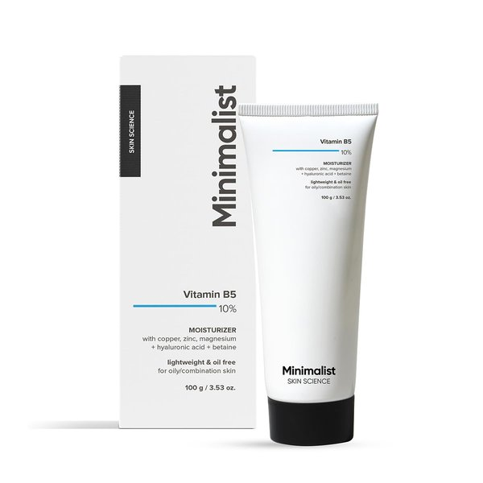

Does your face feel tight, itchy, or stinging after washing? If your skin squeaks after a wash, your cleanser is stripping away your natural barrier lipids. Here is the doctor-backed breakdown of India's 3 most popular non-foaming cleansers so you can pick the right bottle for your skin and tap water.
Consultant Dermatologist & Barrier Specialist
Gentle cleansers are formulated to cleanse without stripping the lipid matrix of your skin barrier[1]. Your ideal choice depends on whether your skin is currently stinging, peeling from acne actives, or struggling with high-mineral hard tap water:
Many people believe a face wash must foam aggressively to clean pores. In reality, strong lather often signals harsh sulfates that break down the natural oils protecting your face.
Compare how Cetaphil, CeraVe, and Minimalist stack up across barrier-repairing ingredients, skin feel, hard water performance, and actual shelf cost in India.
| Feature | Cetaphil Gentle Skin Cleanser | CeraVe Hydrating Cleanser | Minimalist 6% Oat Cleanser |
|---|---|---|---|
| Manufacturer | Galderma (Switzerland / India) | L'Oréal (France / US / India) | Uprising Science (India) |
| Texture & Foam | Translucent fluid lotion; Zero foam | Rich creamy lotion; Zero foam | Oat-colored soothing jelly; Micro-emulsion |
| Key Actives | Niacinamide, Panthenol (Pro-Vitamin B5), Glycerin | 3 Essential Ceramides (1, 3, 6-II), Hyaluronic Acid, MVE Tech | 6% Colloidal Oat Extract, Oat Oil, Bisabolol, Hyaluronic Acid |
| Primary Surfactant | Cetyl Alcohol, Stearyl Alcohol, Sodium Cocoyl Isethionate | Cetearyl Alcohol, Cetyl Alcohol, Phytosphingosine | Sodium Lauroyl Oat Amino Acids |
| Formulation pH | 6.0 – 6.5 (Neutral to slightly acidic) | 5.5 (Skin-identical acidic mantle) | 5.0 – 5.5 (Acidic barrier-friendly) |
| Hard Water Rinsing | Leaves Light Film (Needs cloth or warm water) | Leaves Hydrating Film (Slip feel) | Rinses Clean (Amino acids handle hard minerals) |
| Fragrance & Alcohol | Fragrance-free; Fatty alcohols only | Fragrance-free; Fatty alcohols only | Fragrance-free; Essential oil-free |
| Best Suited For | Easily flushed, reactive, sensitive skin | Severely dry, flaky, retinoid-peeling skin | Combination to dry skin in hard tap water cities |
| India Price (Approx.) | ₹399 for 125ml / ₹1,034 for 500ml | ₹450 for 88ml / ₹1,400 for 473ml | ₹299 for 120ml (Best Value) |
Each cleanser has distinct strengths and limitations based on your daily climate, skin condition, and water supply.
The global benchmark for sensitive, allergy-prone facial skin
Cetaphil has been recommended by dermatologists for decades because of its simple, non-irritating base. In its recent formulation update, Galderma added Niacinamide (Vitamin B3) and Panthenol (Pro-Vitamin B5) while removing parabens. It glides over skin like a dilute water-lotion without causing any friction or tugging. It can even be used without water—simply apply, massage gently, and wipe away with a clean cotton pad.
The ceramide powerhouse for parched, flaky, retinoid-sensitized skin
CeraVe approaches cleansing from a restorative angle. Instead of merely avoiding irritation, it actively supplies three skin-identical ceramides (Ceramide NP, AP, and EOP) alongside cholesterol and hyaluronic acid. Its patented Multivesicular Emulsion (MVE) delivery system releases moisturizing ingredients slowly over time, meaning your skin continues feeling hydrated hours after washing[5].
The modern Indian formulation built for soothing relief and clean rinsing
Minimalist formulated this cleanser with Indian consumers in mind. Rather than copying traditional lotion washes, they combined 6% colloidal oat extract and oat kernel oil with Sodium Lauroyl Oat Amino Acids. Colloidal oatmeal contains natural avenanthramides that calm skin itching and redness. Crucially, the gentle amino acid surfactants create a silky micro-emulsion that rinses away clean without leaving a waxy or greasy coating.
Why do lotion cleansers feel like they leave a film on your face in Bengaluru, Delhi NCR, or Mumbai?
Municipal and borewell tap water in Indian metropolitan regions frequently measures between 500 and 1,200 PPM TDS (Total Dissolved Solids). High levels of dissolved calcium and magnesium react chemically with fatty alcohols and traditional cleansing lotions[4]. When these minerals bind to the cleanser, they create an insoluble residue that feels like a sticky film on your face, potentially trapping dead skin cells inside pores.
Here are the official product packshots, key active ingredients, and current pricing across Indian pharmacies and authorized retailers.

Lotion-like gentle wash formulated with Niacinamide, Panthenol, and Glycerin. Clinically proven to soothe skin without stripping natural barrier lipids.
Creamy moisturizing wash featuring 3 essential ceramides, hyaluronic acid, and MVE slow-release technology. Ideal for retinoid-treated and cracked skin.

Soothing jelly-gel enriched with 6% colloidal oat extract and oat amino acids. Rinses clean even in hard tap water while reducing skin redness.
Board-certified dermatologist Dr. Aleksandra Brown breaks down how formulation differences between these two iconic cleansers affect skin barrier repair.
Video by Dr. Aleksandra Brown DO, FAAD | Board-Certified Dermatologist
Select your primary skin concern below to see our personalized dermatologist recommendation:
Your priority is calming inflammation and preventing irritation. Cetaphil’s minimal formula will not provoke your reactive nerve endings. You can apply it to dry skin and gently wipe it away with a warm damp cloth if tap water burns your face.
Your skin barrier has lost vital lipids. CeraVe supplies ceramides 1, 3, and 6-II along with hyaluronic acid to restore your lipid mortar. Its slow-release MVE delivery ensures continuous barrier replenishment even after rinsing.
Your tap water’s high calcium and magnesium content is turning lotion cleansers into waxy residue. Minimalist uses oat amino acids that rinse cleanly in hard water, while 6% colloidal oat extract soothes surface redness at just ₹299.
Clear, direct answers to common questions about gentle non-foaming cleansers in India.
Scan your face in 10 seconds. Our AI dermatological screening pinpoints barrier damage, hydration deficit, and comedone patterns instantly.
Scan Your Skin (Free)